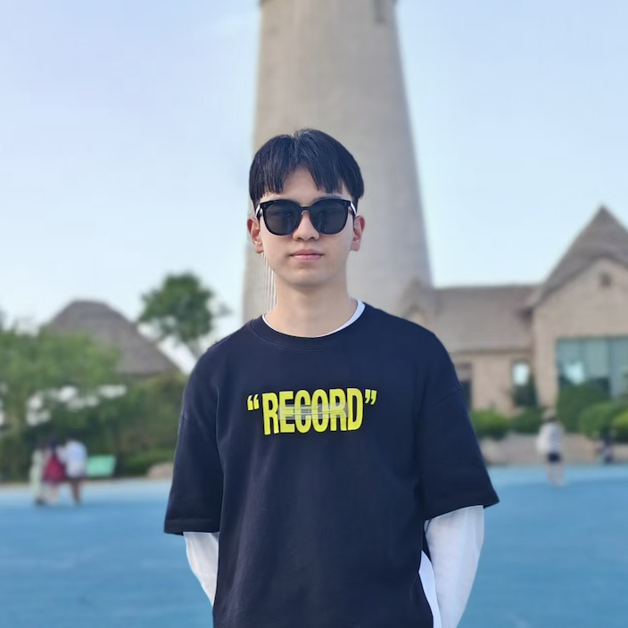
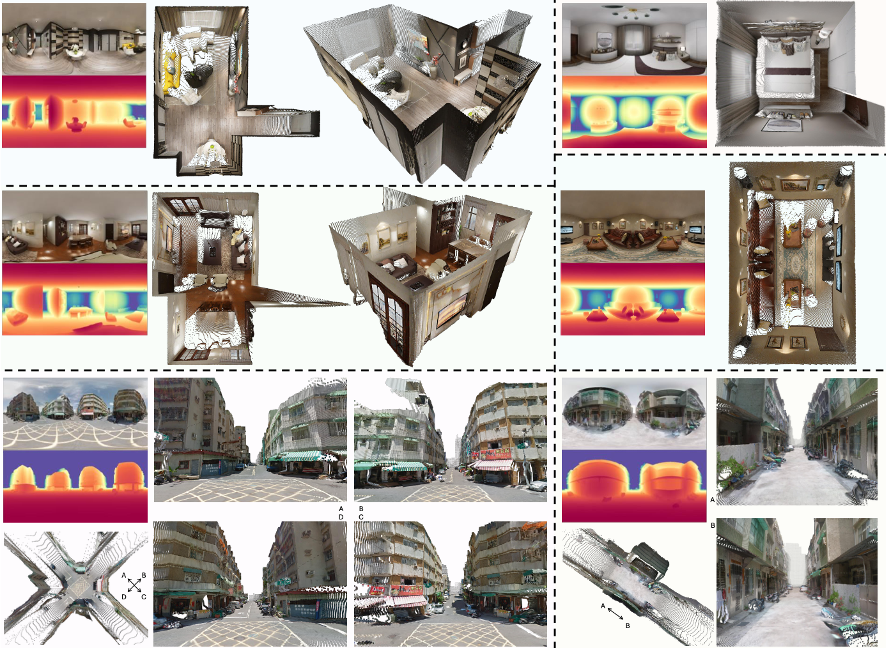
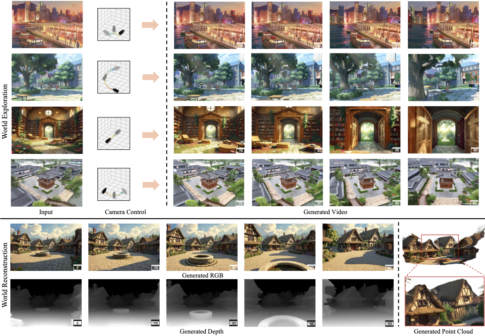
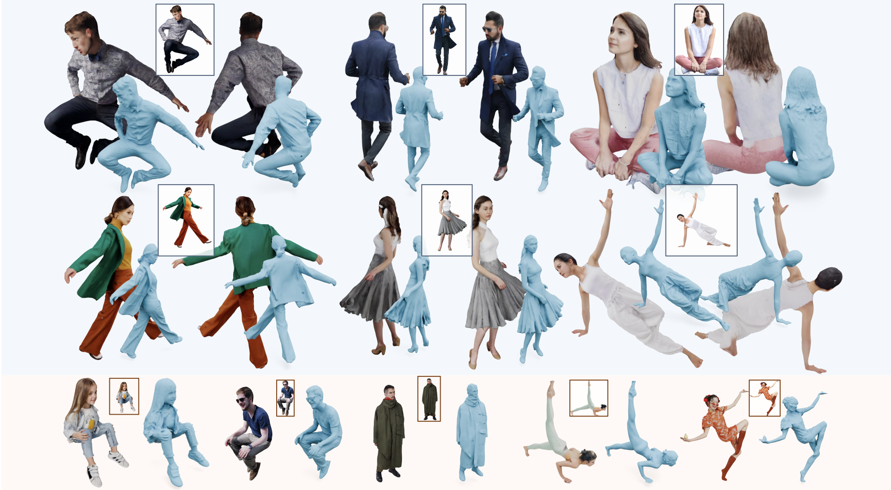
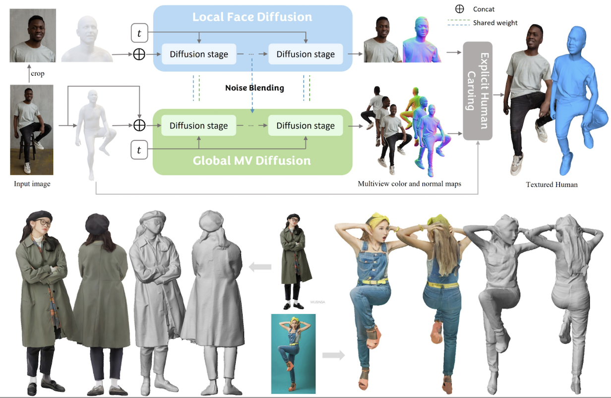
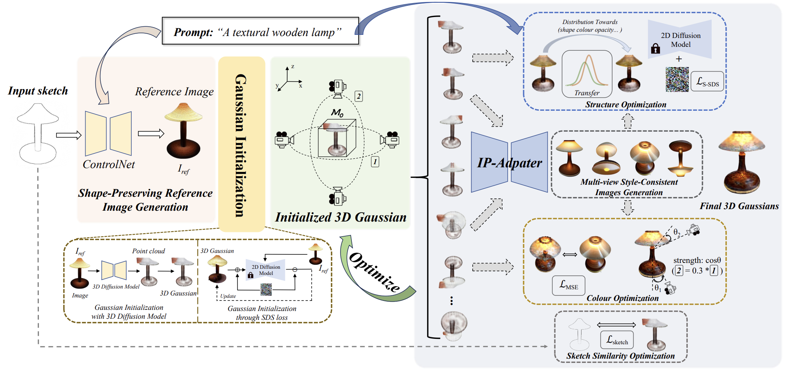

Wangguandong Zheng
World Model Researcher · ByteDance
My research focuses on Interactive World Models, Autoregressive Video Diffusion Models, and Embodied AI.

World Model Researcher · ByteDance
My research focuses on Interactive World Models, Autoregressive Video Diffusion Models, and Embodied AI.
I am a World Model Researcher at ByteDance, where I have worked since April 2026. I received my master’s degree in Electronic Information from Southeast University in June 2026.
I am exploring PhD opportunities and research roles in world models, and embodied AI. If you have a relevant opening, please email zheng_wangguandong@outlook.com.
* indicates equal contribution.

DA2 estimates dense depth directly from a single 360° panorama, with strong zero-shot generalization across scenes. It combines large-scale panoramic training data with SphereViT, a transformer that uses spherical coordinates to account for panoramic distortion and preserve geometric consistency without splitting the image into perspective views.

Voyager turns a single image and a user-defined camera path into an explorable 3D scene by jointly generating RGB and depth videos. A persistent world cache and autoregressive scene extension preserve geometric consistency during long-range exploration, without requiring a separate 3D reconstruction pipeline at inference time.

SyncHuman combines 2D multiview and native 3D generative models to reconstruct clothed human meshes from a single image, including challenging poses. Pixel-aligned synchronization attention keeps the generated views and 3D shapes geometrically aligned, while feature injection transfers fine image details into the final textured mesh.

PSHuman reconstructs a detailed, textured human mesh from a single image. Its SMPL-X-conditioned cross-scale multiview diffusion jointly models the full body and local facial details to preserve identity, while explicit mesh carving and remeshing recover geometry and appearance from the generated color and normal maps.

Sketch3D creates 3D assets whose shapes follow an input sketch and whose colors match a text description. It combines a shape-preserving reference image with style-consistent multiview guidance to optimize 3D Gaussians, jointly refining structure, color, and similarity to the sketch.
Embodied AI Research Intern
Topics: World Models as Reward Model · VLA · Reinforcement Learning.
Embodied AI Research Intern
Topics: Embodied Video Generation · VLA Manipulation.
World Model Research Intern
Topics: World Models · Video Generation · Panoramic Depth Estimation.
Visiting Student
Topics: 3D Generation & Reconstruction.
Visiting Student
Topics: 3D Human Reconstruction · Multiview Diffusion.